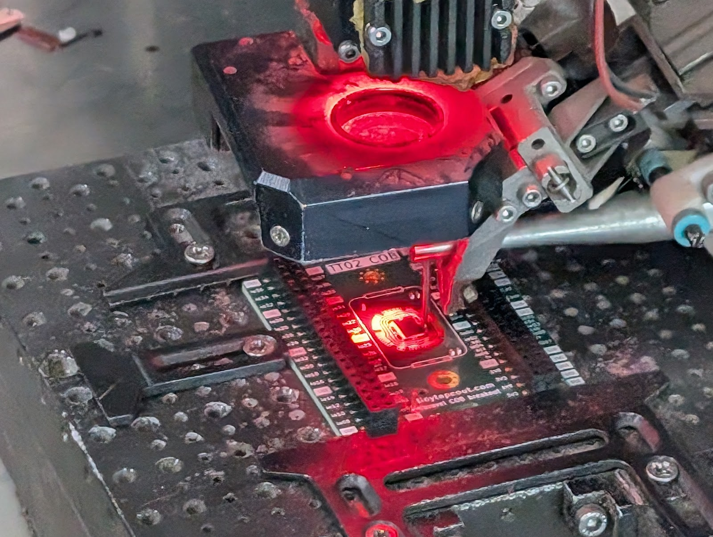
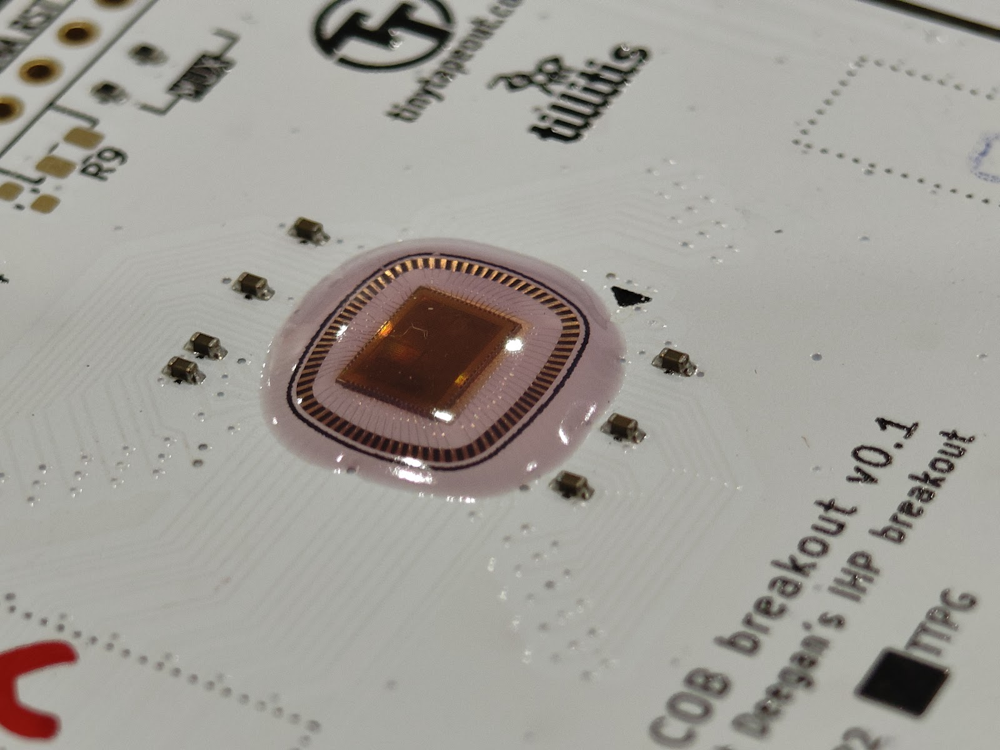
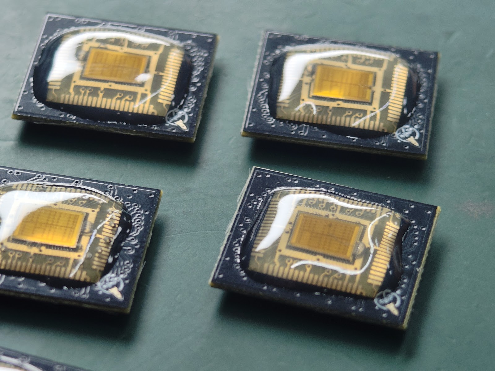
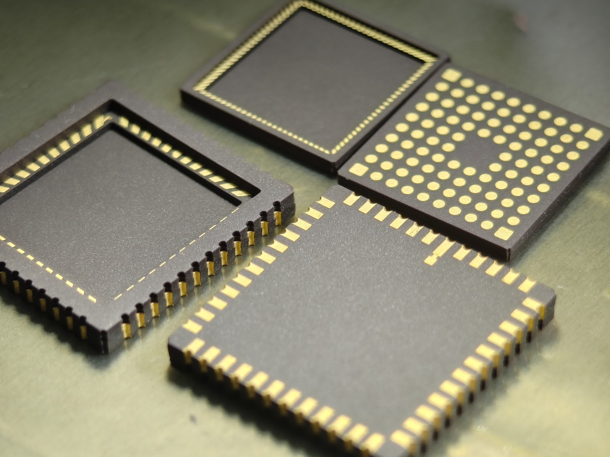
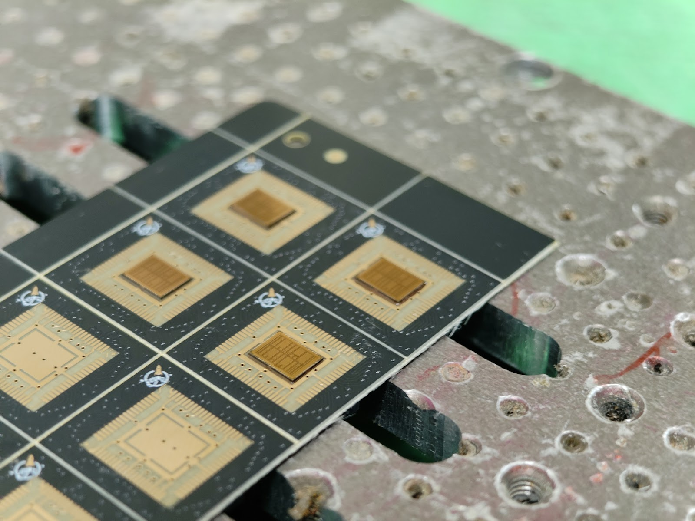
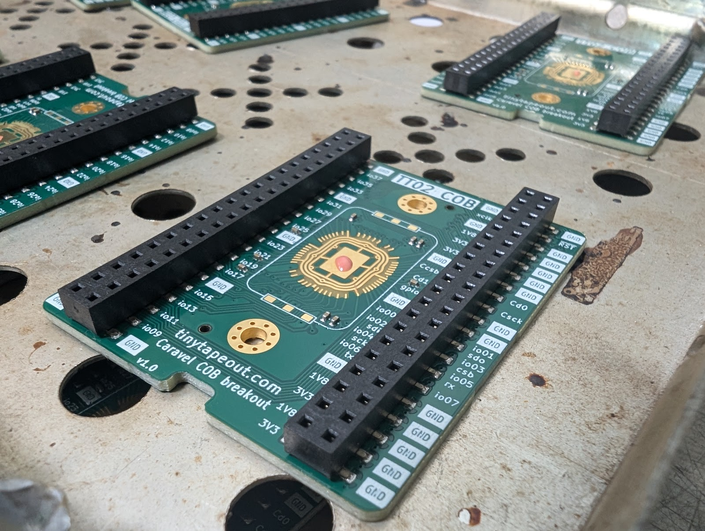
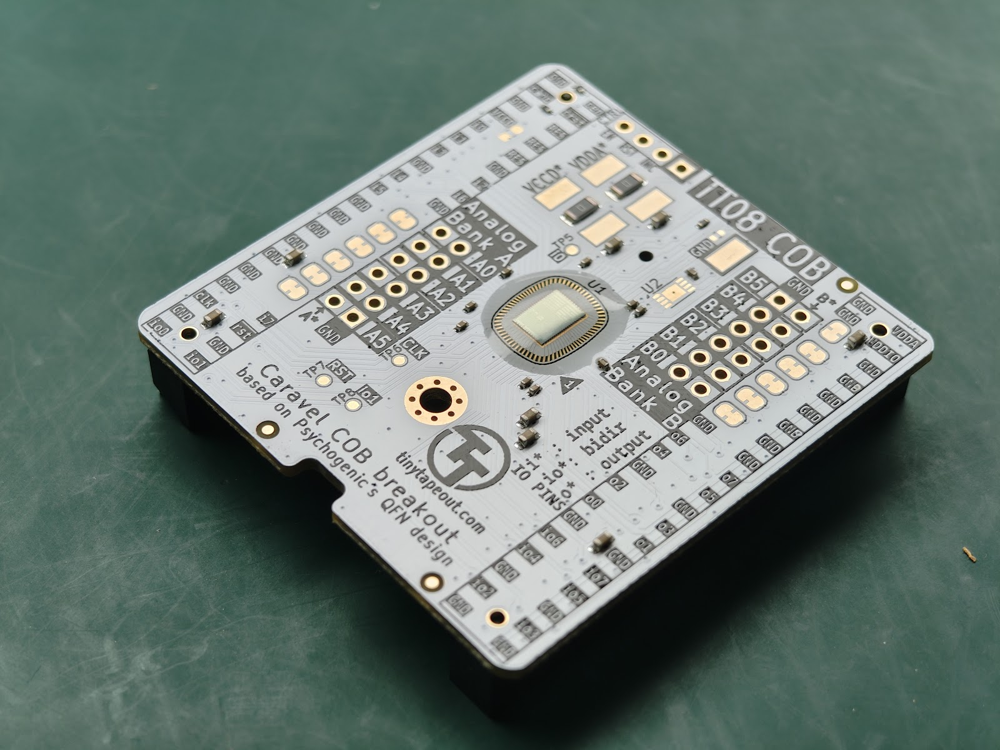

ASIC Ecosystem Partner
From bare die to shipped product.
silicon.wang helps chip teams get bare die ASICs wire bonded (chip-on-board) to PCBs, then packaged, sourced, tested, manufactured, kitted and fulfilled — end to end, in mainland China.
Get in touch
What we do

Die Wire Bonding (COB)
Bare die ASIC wire bonding directly to PCB — chip-on-board assembly for low-volume and prototype runs through to production.

Die Packaging
Packaging options for bare die, matched to your volume, budget and reliability requirements.

Component Sourcing
Sourcing of parts and materials across the supply chain, so your build isn't held up by a missing line item.

Testing
Product testing to catch issues before they leave the factory floor.

Manufacturing & Kitting
Manufacturing and kitting services on the ground in mainland China.

Fulfillment
Fulfillment support to get finished product from the factory to your customers.
Who we work with
We support teams across the ASIC ecosystem, including wafer.space and Tiny Tapeout.